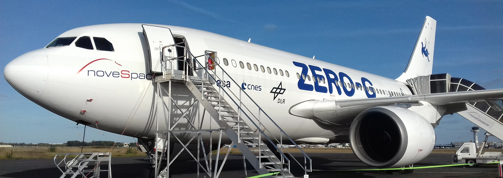

Micro-gravity flight and experiment
This project run during my first year in engineering school. It was supported by the French Space Agency (CNES) and Novespace. This project strated from the design, the production and the validation of an orignal experimental set-up until its realization during a parabolic flight campaign simulating micro-gravity.
The transient evolution of a thermal plume in water is studied experimentally in an environment where gravity varies from 0g (microgravity) to 1.8g (hypergravity). This variation is obtained by performing the experiment in a parabolic flight aircraft, the Zero G of Novespace. After presenting the experimental setup and the different measurement methods used, an analysis of the temperature evolution at the surface of the heating cylinder is performed by comparing measurements and nodal modeling. The analysis is completed with a visualization of the plume dynamics. The measurement technique used to visualize the plume is B.O.S. (Background Oriented Schlieren). It allows to follow the plume evolution dynamics in real time. The results show that for the 1g and 1.8g phases the models are in good agreement with the measurements. On the other hand, new models have to be developed to resolve the transitions to microgravity.
A (french) paper have been published during the French Heat Transfer Congress ( SFT (2019)).